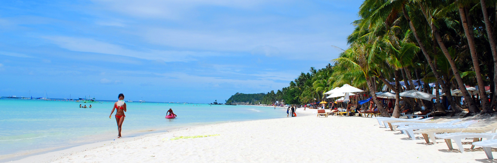
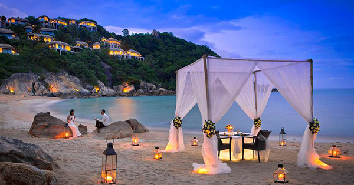
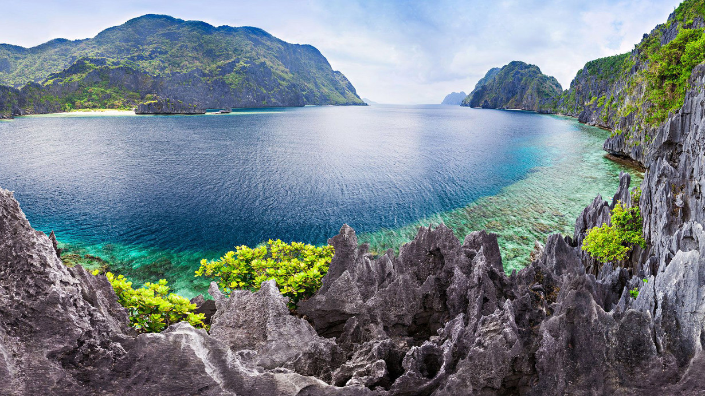

WELCOME TO BORACAY
Boracay is a tropical island surrounded by stunning white sand beaches and clear blue waters located about an hour's flight from Cebu or Manila just off the larger Philippines island of Panay.
For beach connoisseurs, Boracay competes with the best beaches in more popular destinations such as the Caribbean and the South Pacific as well as neighboring Thailand, Malaysia and Indonesia. For those wanting to just lounge around and top up their tan, beachfront hotels usually have lounge chairs set up just a few steps away from the hotel entrances. The more active will appreciate water sports and activities such as sailing, windsurfing, snorkeling, diving and jet skiing. The fun in Boracay doesn't end when the sun sets. The nightlife pulsates with many bars and restaurants serving food, drink and fun until the wee hours of dawn.
Photo



 Home
History
Destinations
Blog
Contact Us
Home
History
Destinations
Blog
Contact Us